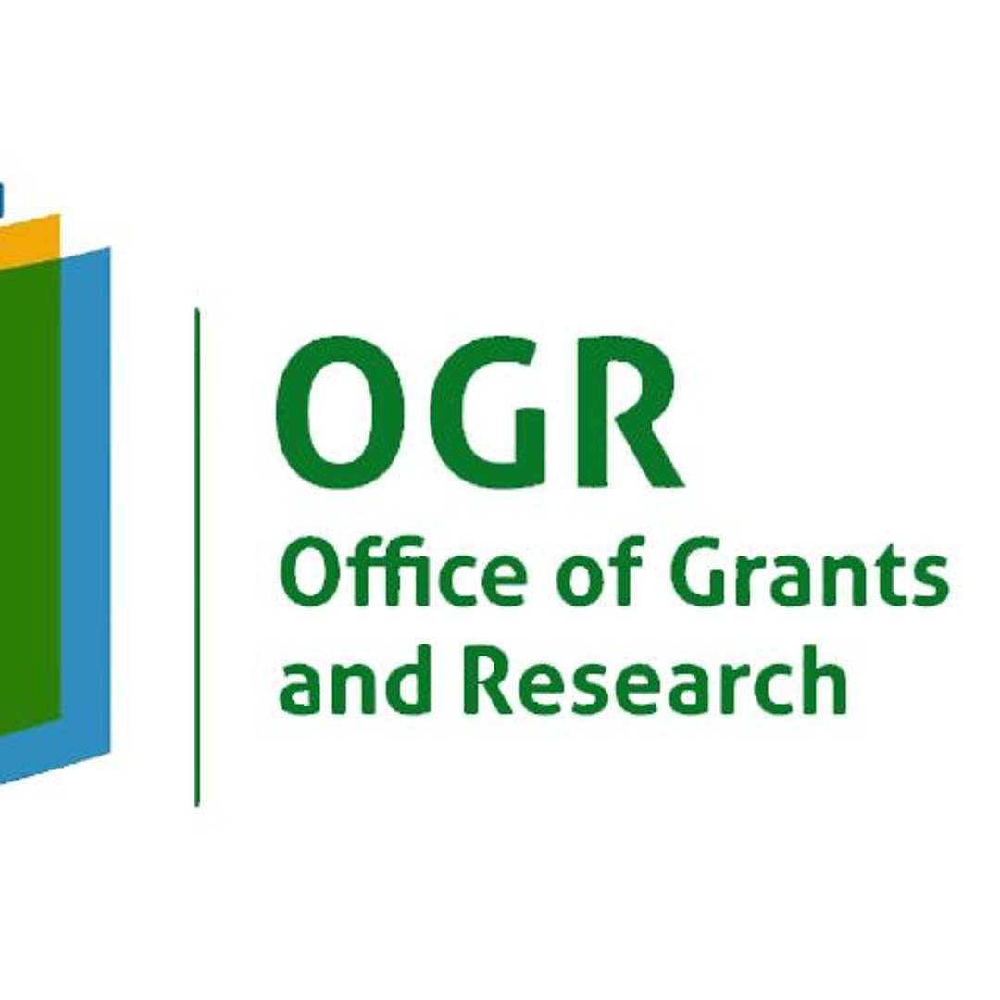

Student Research
Students interested in polymer engineering, sustainable materials, computational methods or materials-focused AI can contact the group to discuss possible research directions.
Opportunities & Funding
We welcome conversations with students, researchers and industry partners interested in polymer materials, sustainable composites, computational materials and related engineering challenges.
Work with us
Availability depends on active projects and supervision capacity, but prospective collaborators are encouraged to get in touch.
Students interested in polymer engineering, sustainable materials, computational methods or materials-focused AI can contact the group to discuss possible research directions.
We welcome joint research, co-development of proposals, publication collaborations and exchange of technical expertise across institutions.
PIRC supports industry-facing work in materials selection, polymer processing, characterization, product development and applied research.
Organizations with polymer-related technical challenges can contact the group to discuss research, testing and engineering support.
Funding partners
PIRC projects have received support for novel polymer materials and sustainable biocomposite development.
Grant support: novel polymer materials development.

Grant support: sustainable biocomposite development.
Contact PIRC
For consultation, research enquiries or prospective collaboration, contact the group by email.